［表面解剖觸診與徒手技巧入門工作坊-第一梯 ］
［表面解剖觸診與徒手技巧入門工作坊-第一梯 ］
感謝各位醫師們熱情參與，許多人同中南部搭高鐵上來，真的是非常感人！ 只能竭盡全力地講解來感謝遠道而來的醫師們。
今天的主題肩頸與上肢，原理拆解牽涉到許多解剖肌動學，有醫師跟我分享他們也有去上過物理治療師的課程，台上老師真的很厲害，但實在是跟不上，好多東西還沒反應過來，老師車已經不知道開到哪裡去了，於是後面幾堂課便作罷。
這樣實在非常可惜⋯⋯⋯少了解剖觸診的基礎踏腳石，真的是個很大的阻力。
這次表面解剖的工作坊，讓解剖知識不再只是停留在書本的平面概念，而是真正的可以徒手找到、自己親手畫出來，讓2D平面解剖圖在眼前呈現出3D的原貌，完美地出現在活生生的人體上！
真的知道解剖肌肉群在哪，才能跟上進階課程的學習，踩穩了這塊表解台階，也才能加速學習的效率，增快自己成長的速度。
此外，也分享了一些診間好用、快速的傷科徒手手法，讓醫師們透過雙手也能做出很棒的治療效果！
今天醫師們都找的非常仔細、畫的非常認真，畫到我的筆都不見了😂😂😂
中醫師們的靈敏雙手是非常強大的武器，只要經過練習，一定是診間解決病痛的利器，相信今天豐富的內容一定讓在場的醫師們有所收穫！
也感謝廖醫師來幫忙我，擔任課程助教，幫助我完成今日整天的課程馬拉松！
今天對我而言是個非常重要的里程碑，希望能透過自己這幾年來的學習歷程與經歷，轉化成實質影響力，替中醫師群體們注入一些重要而不可忽略的基礎與力量！
接著，要接續完成骨盆與下肢的拼圖，我們7月見！
太初·初心苑
中醫師 黃彥鈞
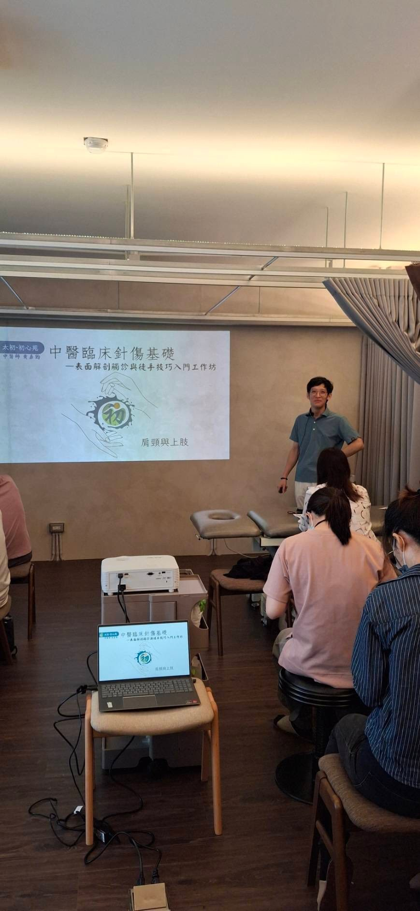
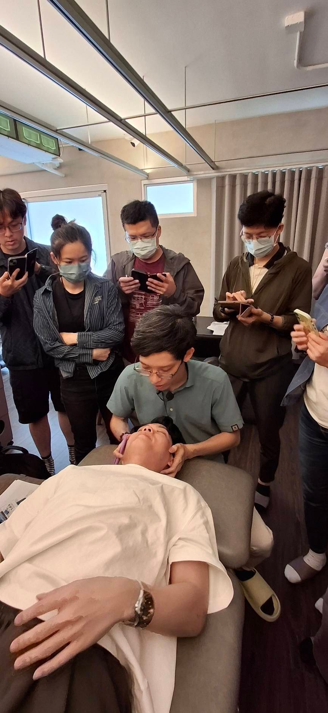
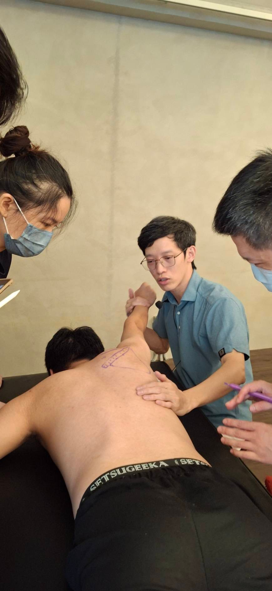
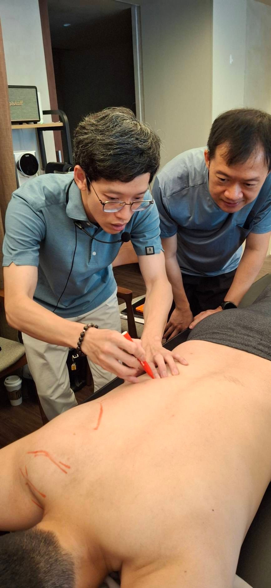
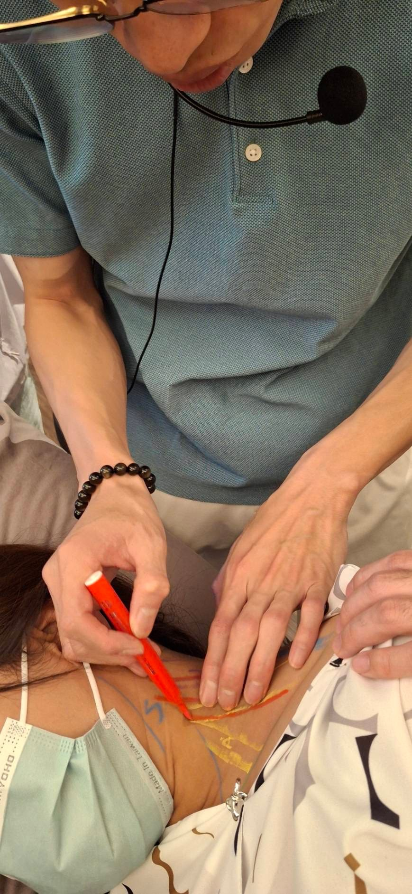
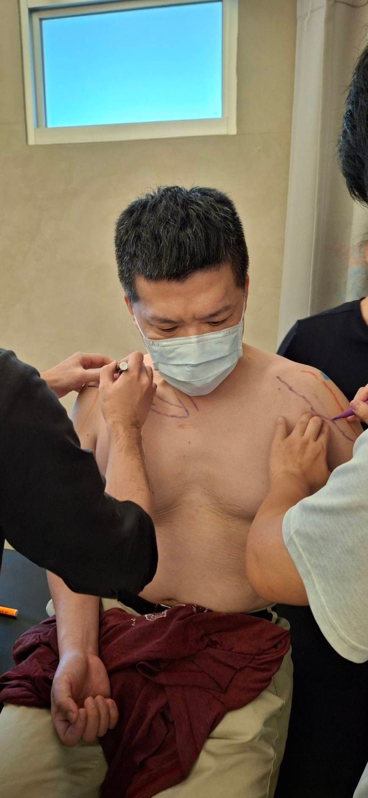
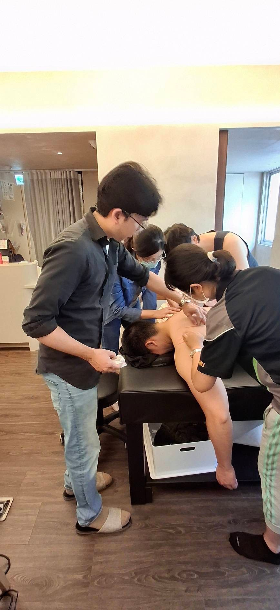
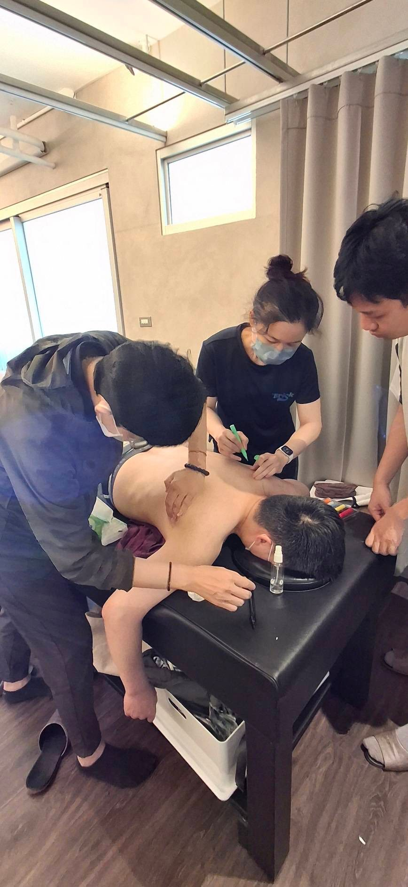
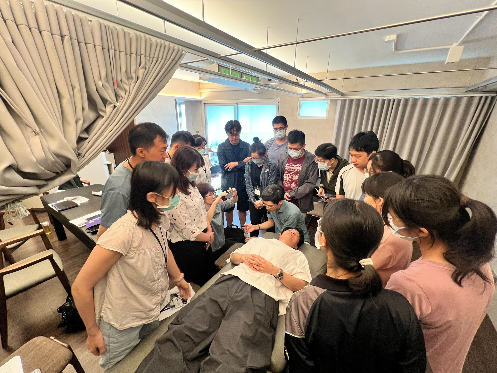
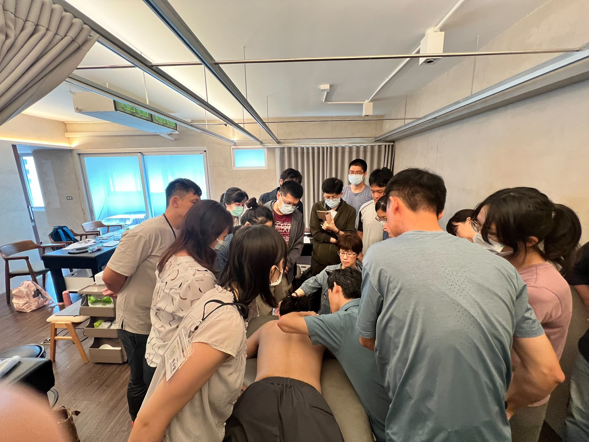
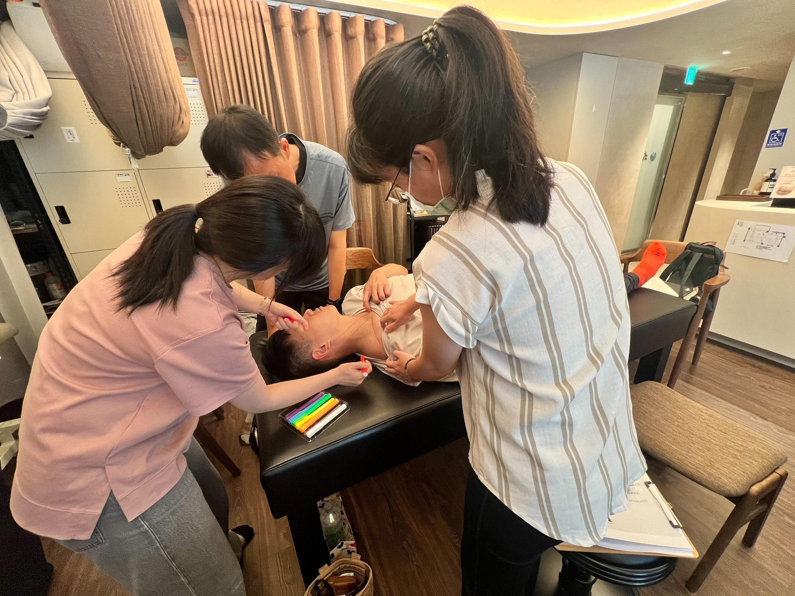
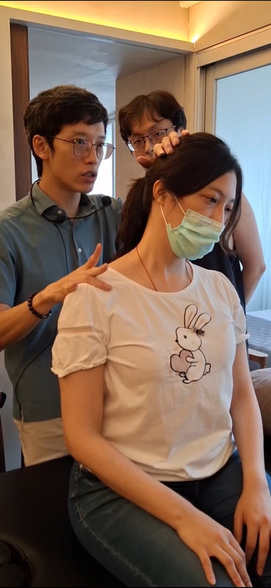
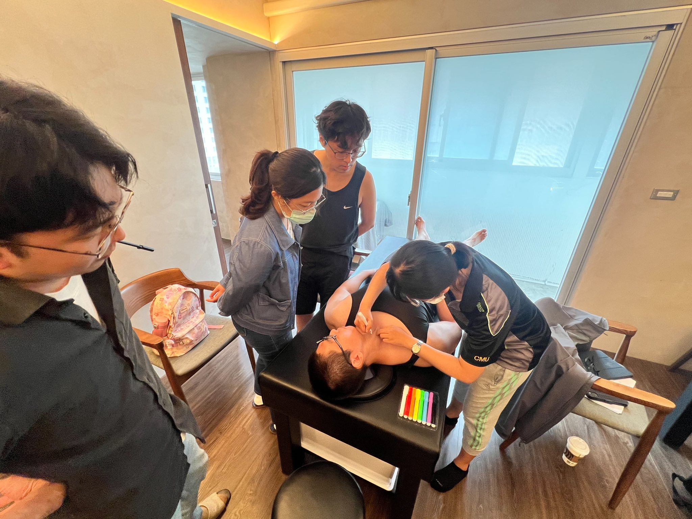
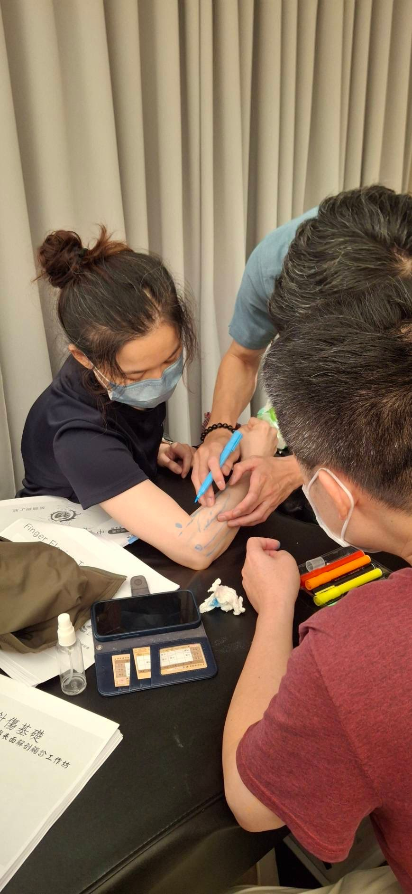
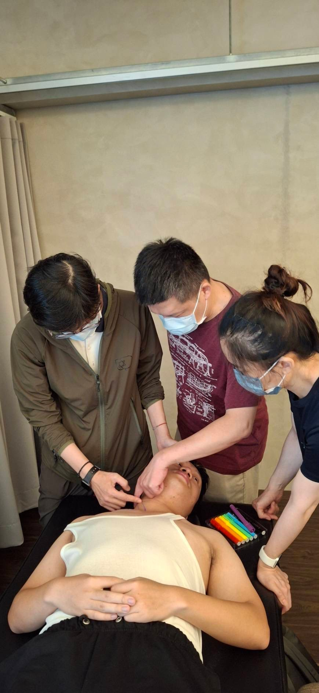